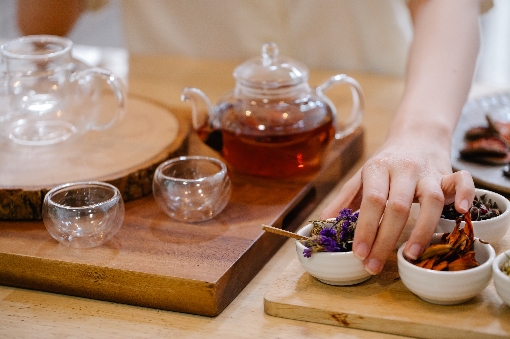

Take a Seat
At Sip & Savor, we invite you to step into a world of tea that goes beyond just flavors; it's an exploration of cultures, traditions, and moments of bliss. Our home page is designed to welcome you with open arms, offering a glimpse into the serenity that awaits within our tea haven.
Discover Our Tea Selection
Immerse yourself in our diverse tea menu, carefully curated to cater to every palate. From the bold notes of Earl Grey to the calming effects of chamomile, each tea tells a tale of its origin and craftsmanship. Whether you're a seasoned tea connoisseur or a novice eager to explore, our menu promises a delightful journey.